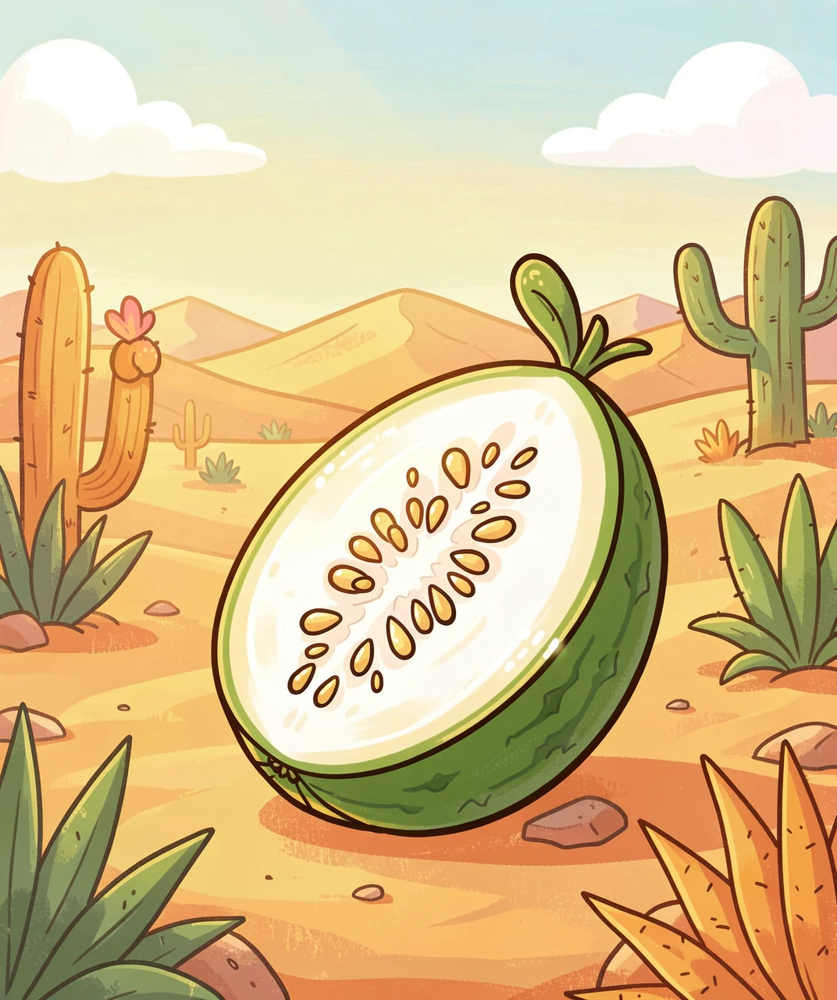
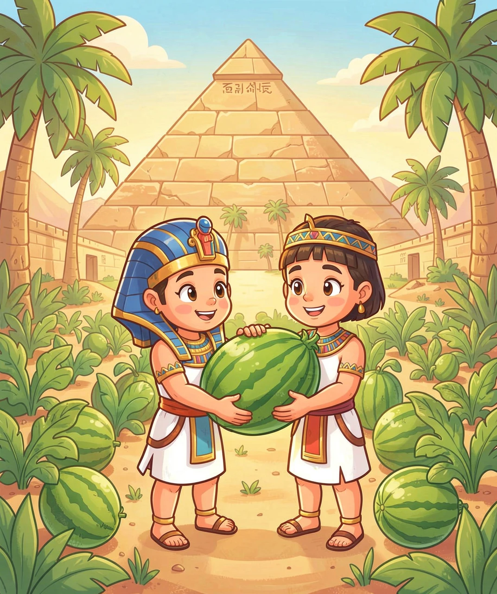
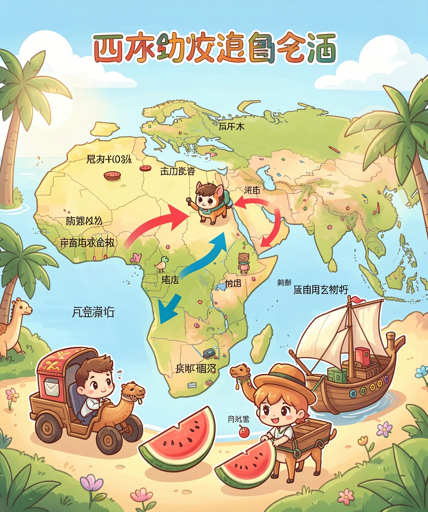
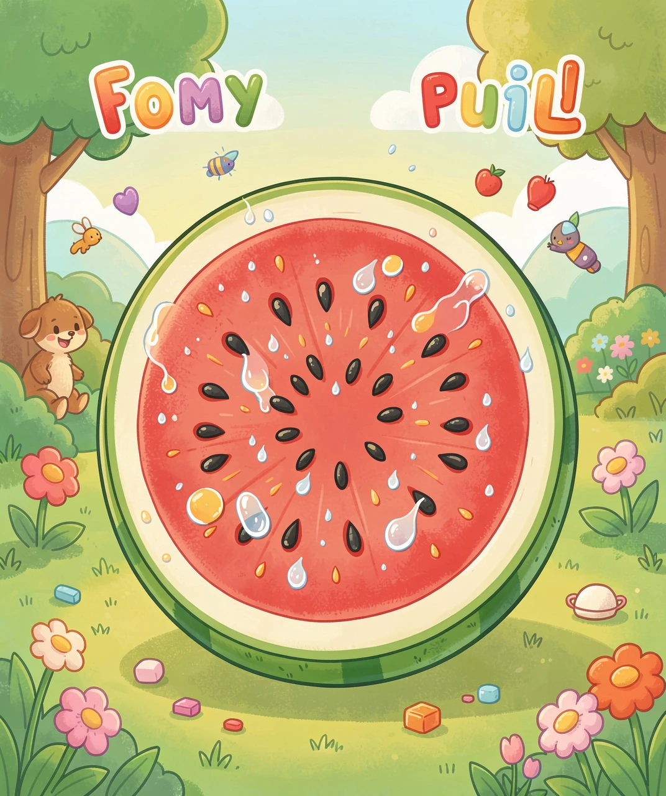
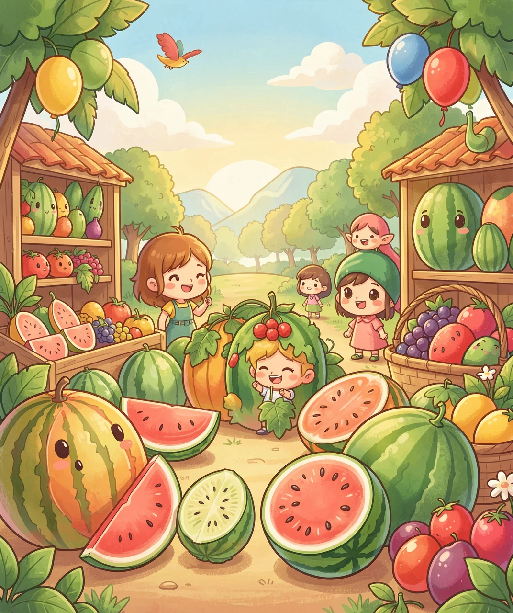

一颗瓜的五千年旅行

想象一下：五千多年前，在非洲的一片炎热沙漠里，长着一种又小又硬的野瓜。它的瓤是白色的，味道苦苦的，籽特别多。它一点也不好吃，却是我们今天吃的西瓜的「老祖宗」。
这种野瓜叫「沙漠西瓜」。它长在干旱的地方，最大的本事是——存水！它的瓤虽然苦，却像一块海绵一样能吸满水。所以沙漠里的动物、赶路的人，都会把它当成一个天然的「水壶」。科学家推测，最早发现并利用它的人，很可能就是看中了它存水的本事，而不是它的味道。
那么问题来了：这么苦的瓜，是怎么变成今天又甜又多汁的大西瓜的？答案是一个词——人工选择。这个故事，要从古埃及开始讲起。

大约四千多年前，古埃及人开始种植西瓜。他们发现，同一片地里的野瓜，有的没那么苦，有的瓤更红，有的水更多。聪明的古埃及人就把这些「稍微好吃一点」的瓜的种子留了下来，第二年专门种它们。年复一年，苦瓜慢慢变甜了。
这就是「人工选择」的力量：不是西瓜自己突然变甜，而是人类一代一代地挑选「最合口味」的那颗瓜，把它的好基因传下去。几百年、几千年下来，西瓜就像被人类「捏」成了今天的样子。
古埃及人到底多爱西瓜？考古学家在古埃及的法老墓里，发现了西瓜籽！在金字塔的壁画上，还能看到西瓜的图案。他们把西瓜当成陪葬品，希望法老在另一个世界也能吃上清甜的瓜。

西瓜从埃及出发，开始了一场横跨几千年的环球旅行。它先被商人带到了地中海沿岸，希腊人和罗马人爱上了它，把它写进书里。然后它跟着商队穿过丝绸之路，一路向东，来到了亚洲。
西瓜是什么时候来到中国的呢？一般认为，是在一千多年前，大约唐代的时候，从西域（今天的新疆和中亚一带）传入中原。因为它是从「西边」来的，所以叫「西瓜」。这个名字，直到今天还在用。
到了欧洲，西瓜继续传播。后来航海家们发现美洲大陆，西瓜也跟着船漂洋过海，在美洲扎根。就这样，一颗非洲沙漠里的苦瓜，用了几千年，走遍了五大洲，成了全世界夏天最受欢迎的消暑水果。

现在我们说说西瓜「肚子」里的秘密。一颗成熟的西瓜，90% 以上都是水。你吃一口西瓜，其实主要是在「喝水」。但光有水还不够，让它甜的关键，是糖分。
西瓜的甜，来自它自己制造的糖。叶子通过光合作用制造养分，再把这些糖运到果实里存起来。西瓜在成熟的过程中，糖分不断积累，所以越接近成熟就越甜。这也是为什么「挑西瓜」要听声音、看纹路——其实是在判断它熟透了没、糖攒够了没。
还有个冷知识：西瓜那层红红的瓤，在植物学上其实是「胎座」——也就是连接种子的那部分组织。它变得又厚又多汁，是为了给种子「储水备粮」。没想到被人类看中，成了最好吃的部分。

今天，全世界每年要种出超过 1 亿吨的西瓜！它已经成了真正的「超级水果」。育种家们还在不断「升级」西瓜：让它更大、更甜、更抗病，甚至种出了不用吐籽的「无籽西瓜」。
无籽西瓜是怎么来的呢？它不是转基因，而是用了一种聪明的「染色体」魔法：让普通西瓜（有两套染色体）和特殊的四倍体西瓜（有四套染色体）杂交，生出的西瓜有三套染色体，就像「单数」一样，没法正常结出成熟的种子，于是就成了无籽西瓜。
从沙漠里一颗苦苦的野瓜，到今天餐桌上一口爆汁的甜西瓜，这条路走了五千年。下次吃西瓜的时候，你不妨想一想：你咬下的这一口，藏着人类的智慧、耐心，还有一场横跨五大洲的漫长旅行。
（答案：1.B 2.A 3.B 4.B 5.B）